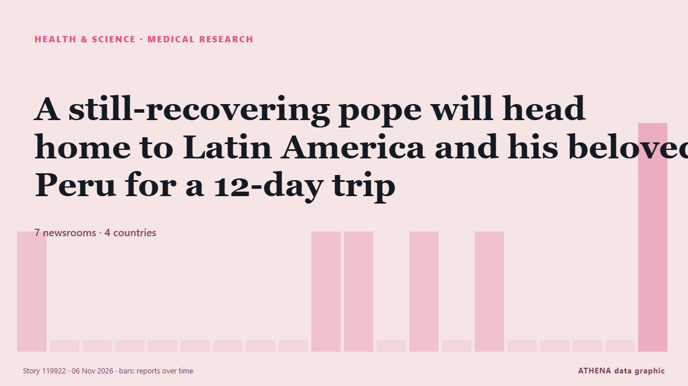

الصحة والعلوم والبحث
برعايةبرعاية  Cybernetics and Artificial Intelligence Lab Welcome to the Cybernetics and Artificial Intelligence Laboratory, established at the Department of Business Administration of the National and Kapodistrian University of Athens. The lab is headed by Professor Dimitrios Thomakos. The lab aims to do research that can be published in top venues. Our research uses tools and methods of Artificial Intelligence, and lies in the following areas: - Forecasting - Decision making - Cyber security - Finance We are always looking forward to collaborating with exceptional students!
Cybernetics and Artificial Intelligence Lab Welcome to the Cybernetics and Artificial Intelligence Laboratory, established at the Department of Business Administration of the National and Kapodistrian University of Athens. The lab is headed by Professor Dimitrios Thomakos. The lab aims to do research that can be published in top venues. Our research uses tools and methods of Artificial Intelligence, and lies in the following areas: - Forecasting - Decision making - Cyber security - Finance We are always looking forward to collaborating with exceptional students!
تُعرض العناوين بالإنجليزية كما نُشرت.

البحث الطبيA still-recovering pope will head home to Latin America and his beloved Peru for a 12-day trip
Three weeks after lung cancer surgery, Pope Leo XIV is embarking on the longest and farthest trip of his pontificate: a 12-day, three-nation tour of Latin America that carries more personal and… من The National Herald
| 24 أكتوبر | 36 |
|---|---|
| 25 أكتوبر | 45 |
| 26 أكتوبر | 83 |
| 27 أكتوبر | 80 |
| 28 أكتوبر | 79 |
| 29 أكتوبر | 90 |
| 30 أكتوبر | 83 |
| 31 أكتوبر | 46 |
| 1 نوفمبر | 34 |
| 2 نوفمبر | 103 |
| 3 نوفمبر | 71 |
| 4 نوفمبر | 87 |
| 5 نوفمبر | 49 |
| 6 نوفمبر | 4 |
British man infected with Ebola to be flown to UK for treatment
It is believed he is a healthcare worker who tested positive amid the outbreak in the Democratic Republic of the Congo. من Evening Standard (London)
British doctor infected with Ebola in Congo being treated in London hospital
The medical doctor was brought to the UK on a medical evacuation flight. من The Irish News (Belfast)
Manchester Christmas Markets 2026 opening and closing times as thousands set to descend on city centre
Here's what you need to know if you're visiting Manchester's Christmas markets. من Manchester Evening News
Why a US-funded vaccine trial on babies was cancelled in Guinea-Bissau
A proposed trial of a hepatitis B vaccine on newborn babies in Guinea-Bissau has been cancelled following accusations that the trial was "unethical" and "neocolonial". من MyJoyOnline
WHO approves clinical trials for two new Ebola vaccines
The World Health Organization has approved clinical trials for two new Ebola vaccines, as doctors fight to control an outbreak in Africa that has killed more than 5,300 people. من RTÉ News
Thailand fossil teeth reveal prehistoric 'giant rat' weighing 30kg
BANGKOK: A giant rodent weighing around 30 kilogrammes roamed what is now southern Thailand 33 to 35 million years ago, scientists said, after identifying a previously unknown species from two… من New Straits Times
Three injured in violence at Athens university campus
Nov 4 - A group of people, some wearing helmets, attacked a student assembly at the University of Athens campus on Wednesday, injuring three people, Greece's medical emergency service and the… من The Straits Times
U.S. Will Drop Smuggling Charges Against Russian-Born Harvard Medical School Scientist
Prosecutors dropped the charges after a federal judge cleared the way for Kseniia Petrova to obtain evidence supporting her claim that she was being vindictively prosecuted. من The Moscow Times
38 Uzbek universities make QS Asia Rankings 2027
38 universities in Uzbekistan have been included in the QS World University Rankings: Asia 2027, with 19 making it into the top 1,000. من Kun.uz (English)
Anthrax Outbreak Kills Dozens of Hippos in DR Congo
Deadly bacterial disease confirmed in Virunga National Park as authorities warn of potential risks to nearby communities and wildlife. من News of Bahrain
Ex-Prince Andrew called to testify in civil case, 1st royal in 156 years to get witness summons
The former Prince Andrew has been called to testify as a witness in a civil fraud trial, marking what is believed to be the first time in more than 150 years that a member of the royal family has… من The Canadian Press (via CityNews)
COVID class action certified over alleged negligence at Toronto long-term care home
Lawsuit alleges Downsview and Gem were grossly negligent in their response to the pandemic, resulting in multiple outbreaks at the home. من The Globe and Mail
Uneven and Fragile Progress Against Neglected Tropical Diseases – New WHO Report
While substantial progress has been made in driving down the global burden of neglected tropical diseases (NTDs), trends are “uneven and fragile”, and several diseases are off course to meet 2030… من Health Policy Watch
Australia plans A$28m barriers to stop invasive cane toads spreading
A new project involving Curtin University and Rio Tinto seeks to establish a waterless barrier for cane toads. من Times of India
BBC expert says new NHS blood test that detects cancer early could be 'game changer'
More than 20,000 NHS patients are set to take part in the world-first cancer blood test trial. من WalesOnline
Democratic victories bring historic breakthroughs for women and minorities
CHICAGO: Voters across the US elected a historic slate of women, candidates of color and other underrepresented politicians on Tuesday, reshaping the face of political leadership as Democrats rode a… من Business Recorder
‘Zeptoverse’: CERN scientists uncover evidence of extraordinarily rare particle decay
Scientists at CERN have found evidence of an extraordinarily rare particle decay using the Large Hadron Collider. من Euronews English
Liverpool care boss suspended after putting terminally ill man at 'unwarranted risk of harm'
Catherine Inguyi Ngaira provided care for a man by the name of patient A in 2020 following his discharge from hospital. من Liverpool Echo
Ground cinnamon recalled in 14 states because of elevated lead levels
Why cinnamon has repeatedly been found to contain potentially dangerous amounts of lead By Mark Huffman of ConsumerAffairs November 3, 2026 SLR Food Distribution Inc. has recalled Wise Wife brand… من Consumer Affairs
Democrats take House and Senate from Republicans in US midterm rout
Democrats will control both chambers of Congress after flipping seats in Republican strongholds. من Malaysiakini
Scientists Crack Secret Code of Lock From Treasure-Laden 16th-Century Shipwreck
Researchers have cracked the four-letter secret code of a 400-year-old combination lock recovered from a shipwreck off the coast of Wales. من Greek Reporter
NASA's Swift space telescope plunges to Earth after 22 years in orbit
One of NASA's premier space telescopes plunged to Earth on Wednesday, ending its 22-year investigation of gamma ray bursts and exploding stars. من CBC News (alternative feed)
Cardiff City 3-3 West Ham highlights
Cardiff City's injury crisis has deepened ahead of West Ham's visit, with Brian Barry-Murphy facing mounting selection headaches and fresh concerns. من WalesOnline
WHO sounds alarm over lack of physical activity among teens
GENEVA, Switzerland (AFP) — A quarter of teens globally engage in basically no physical activity — not even an hour of exercise a week — the World Health Organization (WHO) said Wednesday, warning… من Jamaica Observer
NFL-Lions linebacker Campbell has full movement in lower body after injury
Jack Campbell took a hard hit on his helmet from T.J. من Times of India
Lagos Opens Centre For Legal Research, Training
While the government will provide policy direction, legitimacy and strategic oversight, the private sector is expected to contribute funding, technical expertise, innovation and operational… من Channels TV
Nigeria: Cheap Version of Breakthrough HIV Prevention Shot Approved
[Daily Trust] The US Food and Drug Administration on Monday approved a low-cost version of a twice-yearly HIV prevention shot, bringing the breakthrough drug closer to market in low-income countries. من AllAfrica
Kansas sends Democrat to US Senate for first time since 1932
The result is a blow to Donald Trump, who carried Kansas by more than 10 points in each of his three presidential campaigns and travelled there last week. من Free Malaysia Today
Minority files motion to review Speaker’s ruling on drug seizures inquiry
By: Valentia Tetteh The Minority Caucus in Parliament has filed a motion seeking a review of the Speaker’s September 29, 2026 ruling, which dismissed a request for a parliamentary inquiry into major… من GBC Ghana Online
Are you ready for 72 hours? Thailand urges emergency bag preparations
Thailand’s Department of Disaster Prevention and Mitigation (DDPM) has urged households to prepare emergency bags containing enough food, water, medicine and essential supplies to survive for at… من Khaosod English
‘Mogging’ named Collins Dictionary’s Word of Year for 2026
Slang term refers to outshining or outperforming someone or something. من Anadolu Agency (English)
NASA asks industry for ideas about saving Hubble Space Telescope
The Hubble Space Telescope is healthy but is being pulled down toward Earth by atmospheric drag. من Space.com
Doctor injured in stabbing attack at hospital in western Seoul
A man stabbed and injured a doctor at a major hospital in western Seoul, police said Wednesday, adding that they are investigating the motive for the attack. من The Korea Times
South Carolina elects Democratic senator for first time in almost three decades
Annie Andrews is projected to defeat Darline Graham, who was handpicked by President Trump to take her brother's seat after his death. من BBC News